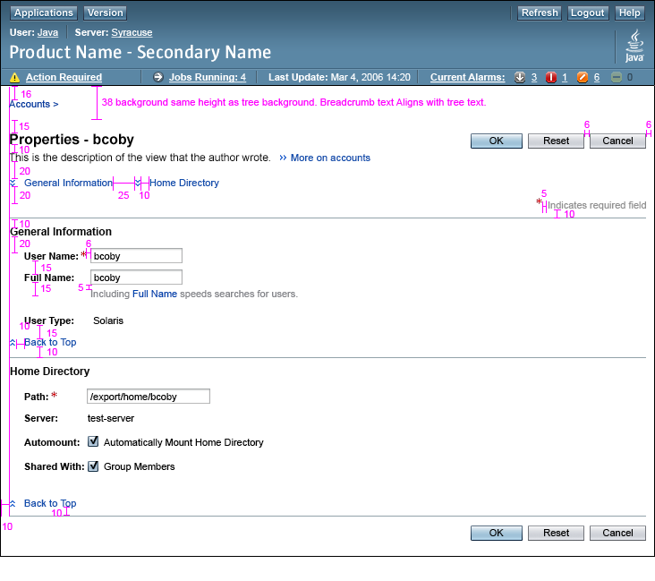
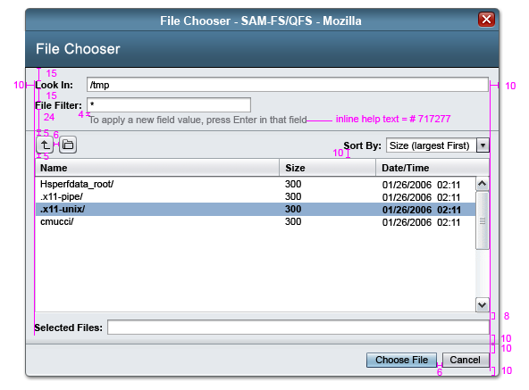

Sun Web Application Guidelines - Version 4.1
Sun Web Application Guidelines - Version 4.1
|
| Search Guidelines | Send Feedback | Developers.sun.com |
How To Use These Guidelines - An Introduction
Appendices > Appendix E
This appendix is primarily intended for use in designing and developing the components within the Sun Common UI Component Library (in open source, the Project Woodstock components). However, as it provides vertical and horizontal spacing information for laying out UI elements on a page, it can also be a useful reference for application developers using the Component Library.
Sun web-based applications should be created using the Sun Common UI Component Library (in open source, the Project Woodstock components). For information about the Sun Common UI Component Library, see Appendix A, Component Library Information.
The following images provide spacing measurements. Again, however, the only assured means of producing guidelines-compliant pages is through using the Sun Common UI Component Library.
Masthead (units=pixels):

Properties Page with Sections (units=pixels):

Pop-Up Window (units=pixels):

| Privacy Policy | Terms of Use | Trademarks | Copyright 2007 Sun Microsystems, Inc. |